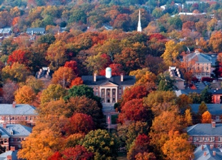

Invited Speakers
|
Plenary Speakers
- Michael Kosorok (University of North Carolina)
- Susan Murphy (University of Michigan)
- Bin Yu (UC Berkeley)
Banquet Speaker
- J.S. Marron (University of North Carolina)
Invited Speakers
- Genevera Allen (Rice University)
- Andreas Artemiou (Cardiff University)
- Jacob Bien (Cornell University)
- Shankar Bhamidi (University of North Carolina)
- J. Paul Brooks (Virginia Commonwealth University)
- Florentina Bunea (Cornell University)
- Constantine Caramanis (UT Austin)
- Kun Chen (University of Connecticut)
- Shuo Chen (University of Maryland)
- Xi Chen (New York University)
- Haitao Chu (University of Minnesota)
- Scott Clark (Eli Lilly & Co.)
- Will Fithian (UC Berkeley)
- Bailey Fosdick (Colorado State University)
- Holger Frohlich (UCB Biosciences Inc.)
- Haoda Fu (Eli Lilly)
- Max G’Sell (CMU)
- John Guerard (McKinley Capital Mgt., LLC)
- Fang Han (University of Washington)
- Lauren Hannah (Columbia University)
- Jan Hannig (University of North Carolina)
- Botao Hao (Purdue)
- Ning Hao (University of Arizona)
- Adel Javanmard (University of Southern California)
- Amin Karbas (Yale University)
- Patrick Koch (SAS)
- Mladen Kolar (University of Chicago)
- Matthew A. Lanham (Virginia Tech)
- Can Le (University of Michigan)
- Johannes Lederer (University of Washington)
- Dongmei Li (University of Rochester)
- Gen Li (Columbia)
- Lina Lin (University of Washington)
- Han Liu (Princeton University)
- Shu Lu (University of North Carolina)
- Xi Luo (Brown Univ)
- Ping Ma (University of Georgia)
- Shuangge Ma (Yale University)
- Qing Mai (Florida State University)
- Shawn Mankad (Cornell University)
- Tyler McCormick (University of Washington)
- Edward McFowland III (University of Minnesota)
- Veena Mendiratta (Bell Labs, Nokia)
- Aaron Molstad (University of Minnesota)
- Roshanak Nateghi (Purdue University)
- Sahand Negahban (Yale University)
- Long Nguyen (University of Michigan)
- Andrew Nobel (University of North Carolina)
- Xingye Qiao (Binghamton University, SUNY)
- Annie Qu (UIUC)
- Garvesh Raskutti (University of Wisconsin Madison)
- Bhargava Reddy (UCB Biosciences Inc.)
- Zhao Ren (University of Pittsburg)
- Daniel Roy (University of Toronto)
- Cynthia Rudin (MIT)
- Yiyuan She (Florida State University)
- Dinggang Shen (University of North Carolina)
- Ali Shojaie (University of Washington)
- Jorge Silva (SAS)
- Chi Song (Ohio State University)
- Rebecca Steorts (Duke)
- Weijie Su (Stanford University)
- Zhihua Su (University of Florida)
- Wei Sun (Fred Hutchinson)
- Wei Sun (Yahoo)
- Yuekai Sun (UC Berkeley)
- Daniel Sussman (Harvard)
- Chengyong Tang (Temple University)
- Stefano Traca (MIT)
- Anand Vidhyashankar (George Mason University)
- Alexander Volfovsky (Harvard/Duke)
- Stefan Wager (Stanford University)
- Boxiang Wang (University of Minnesota)
- Peng Wang (University of Cincinnati)
- Sijian Wang (UW-Madison)
- Xue Wang (Penn State)
- Yuanjia Wang (Columbia University)
- Zhaoran Wang (Princeton University)
- James Wilson (University of San Francisco)
- Yichao Wu (North Carolina State University)
- Yuying Xie (Michigan State University)
- Ganggang Xu (Binghamton University, SUNY)
- Junming Yin (University of Arizona)
- Alireza Yektamaram (Lehigh University & SAS)
- Ming Yuan (University of Wisconsin Madison)
- Donglin Zeng (University of North Carolina)
- Anru Zhang (University of Wisconsin Madison)
- Cunhui Zhang (Rutgers University)
- Heping Zhang (Yale University)
- Kai Zhang (University of North Carolina)
- Xin Zhang (Florida State University)
- Yuan Zhang (University of Michigan)
- Sen Zhao (University of Washington)
- Yingqi Zhao (Fred Hutchinson)
- Zhigen Zhao (Temple University)
- Tian Zheng (Columbia University)
- Pingshou Zhong (Michigan State University)
- Shuheng Zhou (University of Michigan)
- Mu Zhu (University of Waterloo)
- Yunzhang Zhu (Ohio State University)
|